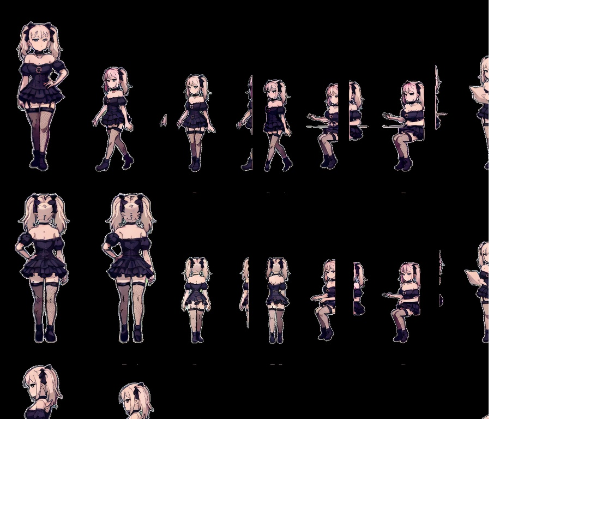
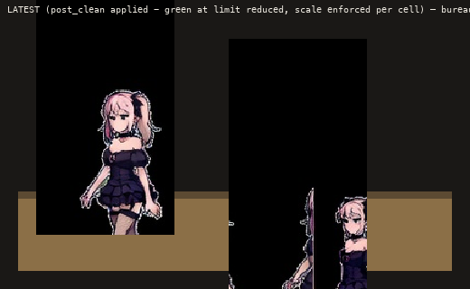

Latest Clean Sheet (green key fixed)
Full production sheet. No green bleed, clean alpha, consistent identity, seated poses ready for the bureau/desk composite.

D5-clean • 896×768 native • promoted to agent_grok.png
Bureau Test (on actual desk)
Idle (left) + typing (right) composited on real desk slice. Check leg position and scale for the office scene.

Latest D5 on bureau
All 21 Frames (latest only)
Down / Up / Right • walk A/N/B • type 0/1 • read 0/1. Clean, no green artifacts.
DOWN (front)
UP (back)
RIGHT (profile)